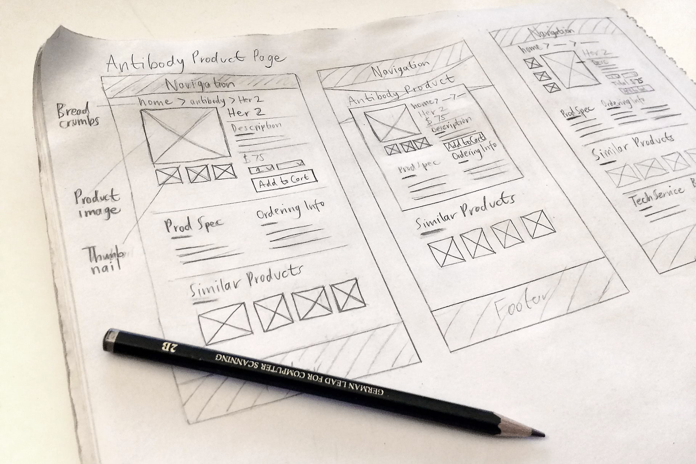
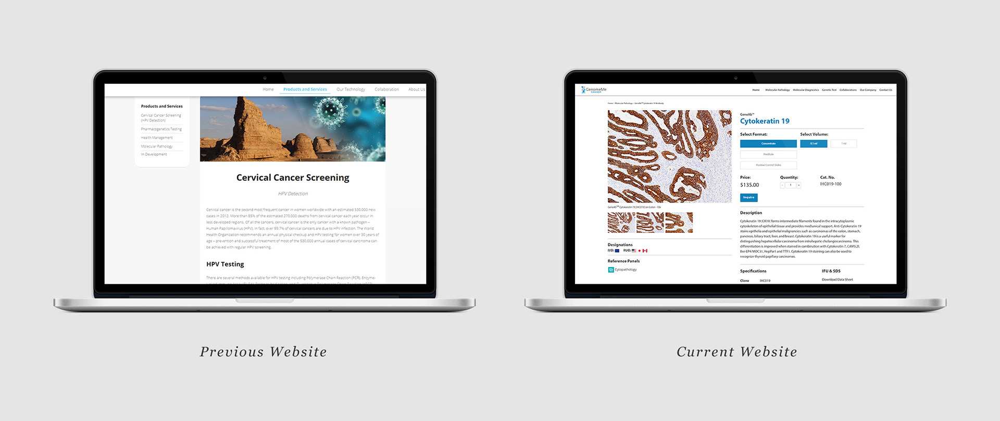
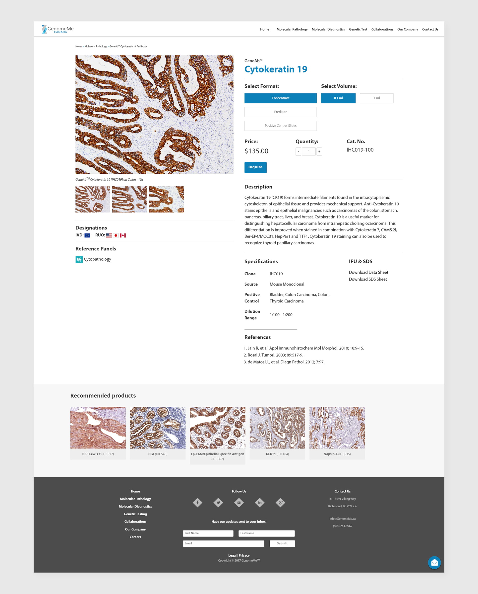
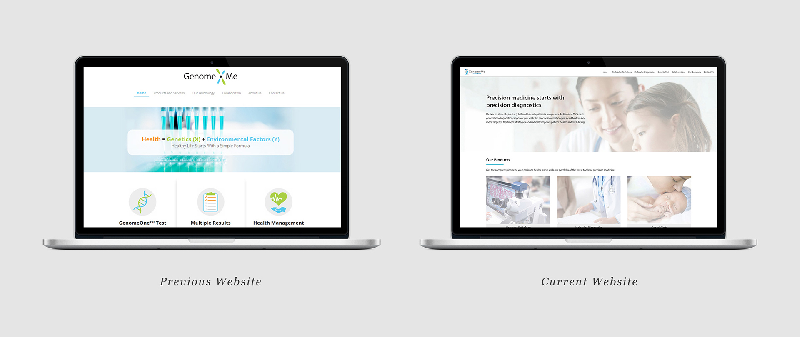
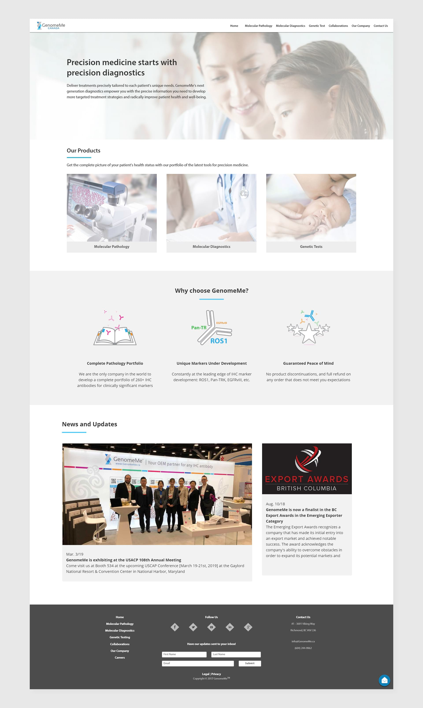

Timeline
4 months
GenomeMe is an award-winning biotechnology company that specializes in the development and manufacture of antibodies and diagnostic kits for identifying cancer cells. The company also distributes their products internationally to various parts of the world.
As a design intern, I was tasked with redesigning GenomeMe's website and creating a new product purchasing experience to increase their product sales. My contributions include redesigning existing product and landing page, troubleshooting bugs, and developing another 15 responsive web pages.
In the first week, I had a couple of team meetings with the marketing team to get a better understanding about the problems, goals, constraints, and timeframe of the website redesign project. We highlighted several major issues of the old website based on the feedback from the customers, analysis of the team, and problems I found myself.
Major issues of the old website:
Goals for redesign:
The company had dozens of antibody products with each having important information that customers need to know. Knowing that I had to accommodate a massive amount of information, I sketched many possible layouts and explored different ways to display and organize a large amount of information into a number of different sections.
We implemented product inquiry and filter selection features to the newly redesign product page to provide customers with a seamless end-to-end purchasing experience. Through product inquiry feature, customers can easily make an inquiry for a product directly within the page while filter selection enables them to choose a certain format/volume of the product based on their needs. The information were also divided into different sections with subtle divider lines to maximize its readability and to make it easier for customers to digest.
 Comparison of previous and current product page  Full page mockup of the redesigned product pageWe simplified the landing page by strategically selecting the three most important content (molecular pathology, molecular diagnostics, genetic tests) to drive the sales of products and services the company offers, and make it easier for customers to find more information about the company. We also made the design to be consistent and unified with the overall visual style of the website. The subtle grey and white are frequently used throughout the entire website to give an appropriately clean atmosphere, and to mimic what one would expect to feel in the healthcare industry.
 Comparison of previous and current landing page  Full page mockup of the redesigned landing pageOne of the most important takeaways from my time at GenomeMe was a new understanding and appreciation for working as a T-shaped designer. I was put to work in a variety of roles allowing me to flex my skills across the entire skillset required in designing digital products. Furthermore, I was able to develop my web development skills through project work and mentorship from senior management.